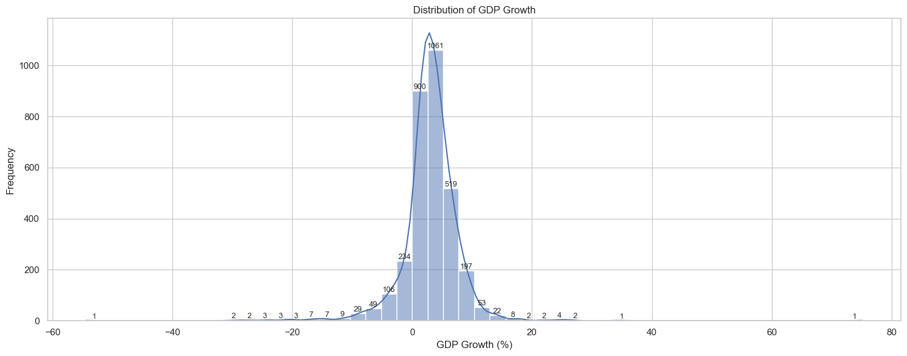
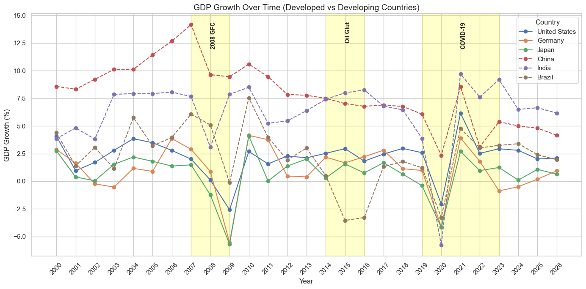
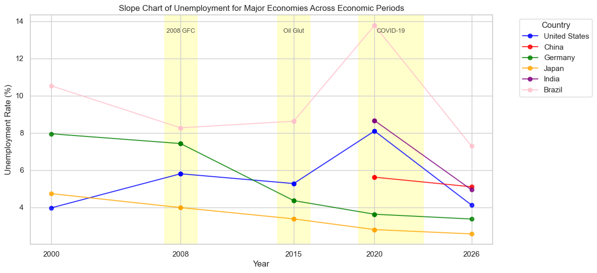
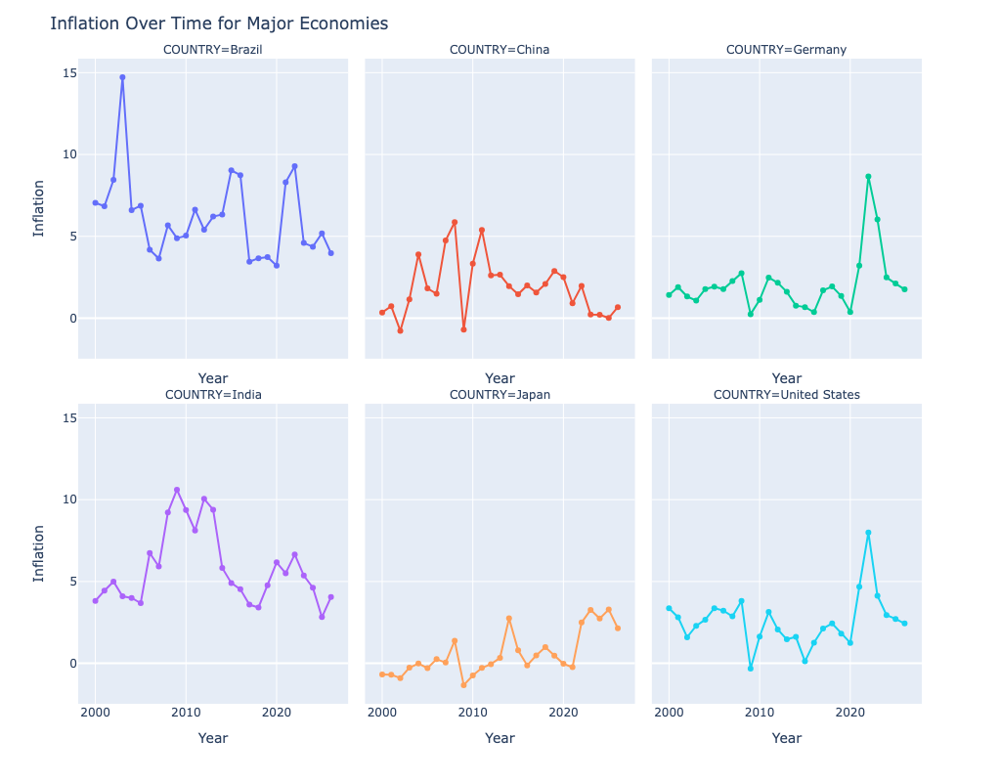
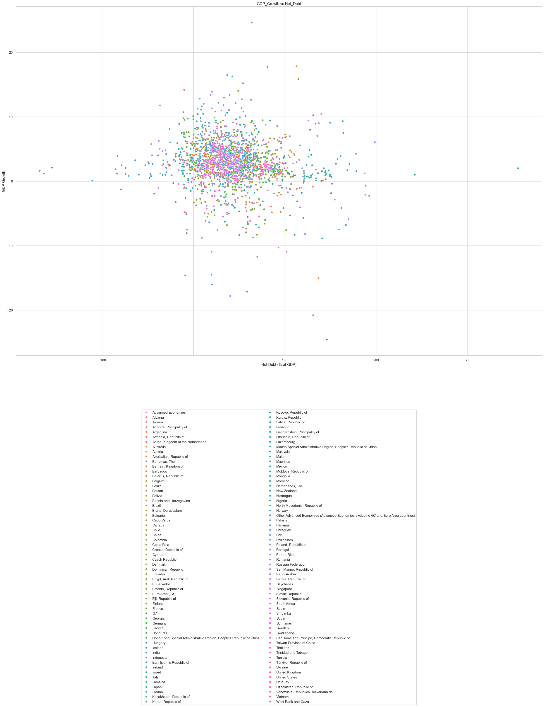
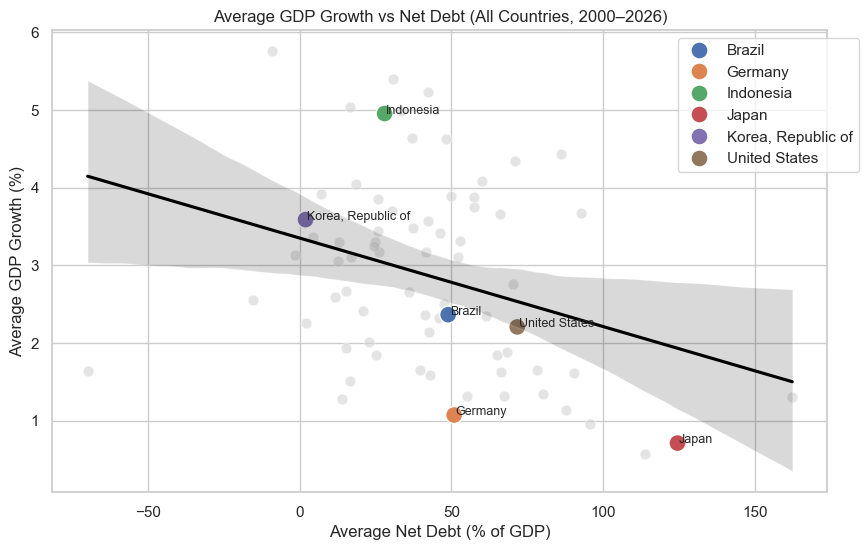

import numpy as np
import pandas as pd
import matplotlib.pyplot as plt
import seaborn as sns
import plotly.express as px
import math Economic Resilience and Stability Analysis Across Countries: A Cross-Country Analysis Using IMF Data
Overview
This project explores macroeconomic trends across countries using data from the International Monetary Fund (IMF), covering the years 2000 to 2026. The dataset includes key indicators such as GDP growth, inflation, unemployment, current account balance, net debt, and GDP per capita (PPP). The main goal is to understand how economies grow, recover from shocks, and maintain stability, with a particular focus on the differences between developed and developing countries.
A central part of the analysis is examining how economies respond to major global shocks, including the 2008 Global Financial Crisis (GFC), the 2014–2016 Oil Glut, and the COVID-19 pandemic. By analyzing these periods, the project seeks to identify patterns in economic resilience, the speed of recovery, and structural differences that influence growth and labor market outcomes.
The study also investigates the relationships between key macroeconomic indicators. GDP growth distributions are analyzed to understand typical patterns and extreme cases, while comparisons between developed and developing countries reveal differences in growth trajectories and recovery dynamics during crises. Unemployment trends provide insight into labor market resilience, while inflation patterns highlight stability and the effectiveness of monetary policy. The interplay between net debt and GDP growth is examined to explore how fiscal policy can either support or constrain economic performance.
Using a combination of histograms, time series, slope charts, scatter plots, and small multiples, the project integrates descriptive and analytical perspectives to provide a comprehensive understanding of global economic dynamics. By connecting growth, labor markets, fiscal policy, and inflation, and by situating these within the context of major economic shocks, the analysis reveals how structural characteristics and policy choices shape the performance and resilience of economies over time.
econ_data = pd.read_csv("econ_data.csv", low_memory=False)
print('\nData Preview:')
display(econ_data.head())
display(econ_data.info())
display(econ_data.describe())
econ_data['INDICATOR'].value_counts()
Data Preview:| DATASET | SERIES_CODE | OBS_MEASURE | COUNTRY | INDICATOR | FREQUENCY | SCALE | 2000 | 2001 | 2002 | ... | 2017 | 2018 | 2019 | 2020 | 2021 | 2022 | 2023 | 2024 | 2025 | 2026 | |
|---|---|---|---|---|---|---|---|---|---|---|---|---|---|---|---|---|---|---|---|---|---|
| 0 | IMF.RES:WEO(9.0.0) | GBR.BCA_NGDPD.A | OBS_VALUE | United Kingdom | Current account balance (credit less debit), P... | Annual | Units | -1.831 | -1.773 | -1.973 | ... | -3.493 | -3.927 | -2.688 | -2.934 | -0.437 | -2.102 | -3.509 | -2.656 | -3.091 | -2.961 |
| 1 | IMF.RES:WEO(9.0.0) | AUT.BCA_NGDPD.A | OBS_VALUE | Austria | Current account balance (credit less debit), P... | Annual | Units | -0.710 | -0.800 | 2.118 | ... | 1.264 | 0.846 | 2.376 | 3.367 | 1.735 | -0.862 | 1.341 | 2.409 | 1.793 | 2.157 |
| 2 | IMF.RES:WEO(9.0.0) | G119.PPPPC.A | OBS_VALUE | G7 | Gross domestic product (GDP), Per capita, purc... | Annual | Units | 32012.711 | 32943.335 | 33630.978 | ... | 51951.350 | 54013.465 | 56403.999 | 55308.052 | 60753.460 | 66531.885 | 69803.757 | 72267.969 | 74854.234 | 77275.661 |
| 3 | IMF.RES:WEO(9.0.0) | G119.BCA_NGDPD.A | OBS_VALUE | G7 | Current account balance (credit less debit), P... | Annual | Units | -1.361 | -1.376 | -1.408 | ... | 0.090 | -0.103 | 0.039 | -0.738 | -0.740 | -1.992 | -1.434 | -1.629 | -1.757 | -1.572 |
| 4 | IMF.RES:WEO(9.0.0) | G110.NGDP_RPCH.A | OBS_VALUE | Advanced Economies | Gross domestic product (GDP), Constant prices,... | Annual | Units | 4.158 | 1.577 | 1.639 | ... | 2.595 | 2.286 | 1.870 | -3.928 | 6.033 | 2.980 | 1.727 | 1.827 | 1.607 | 1.634 |
5 rows × 34 columns
<class 'pandas.DataFrame'>
RangeIndex: 671 entries, 0 to 670
Data columns (total 34 columns):
# Column Non-Null Count Dtype
--- ------ -------------- -----
0 DATASET 671 non-null str
1 SERIES_CODE 671 non-null str
2 OBS_MEASURE 671 non-null str
3 COUNTRY 671 non-null str
4 INDICATOR 671 non-null str
5 FREQUENCY 671 non-null str
6 SCALE 671 non-null str
7 2000 627 non-null float64
8 2001 642 non-null float64
9 2002 649 non-null float64
10 2003 651 non-null float64
11 2004 652 non-null float64
12 2005 652 non-null float64
13 2006 652 non-null float64
14 2007 654 non-null float64
15 2008 657 non-null float64
16 2009 657 non-null float64
17 2010 660 non-null float64
18 2011 663 non-null float64
19 2012 666 non-null float64
20 2013 666 non-null float64
21 2014 666 non-null float64
22 2015 666 non-null float64
23 2016 666 non-null float64
24 2017 669 non-null float64
25 2018 669 non-null float64
26 2019 668 non-null float64
27 2020 667 non-null float64
28 2021 667 non-null float64
29 2022 667 non-null float64
30 2023 666 non-null float64
31 2024 661 non-null float64
32 2025 644 non-null float64
33 2026 638 non-null float64
dtypes: float64(27), str(7)
memory usage: 261.8 KBNone| 2000 | 2001 | 2002 | 2003 | 2004 | 2005 | 2006 | 2007 | 2008 | 2009 | ... | 2017 | 2018 | 2019 | 2020 | 2021 | 2022 | 2023 | 2024 | 2025 | 2026 | |
|---|---|---|---|---|---|---|---|---|---|---|---|---|---|---|---|---|---|---|---|---|---|
| count | 627.000000 | 642.000000 | 649.000000 | 651.000000 | 652.000000 | 652.000000 | 652.000000 | 654.000000 | 657.000000 | 657.000000 | ... | 669.000000 | 669.000000 | 668.000000 | 667.000000 | 667.000000 | 667.000000 | 666.000000 | 661.000000 | 644.000000 | 638.000000 |
| mean | 2980.338421 | 3070.582017 | 3131.162587 | 3250.112350 | 3556.731796 | 3780.306551 | 4054.253785 | 4323.564674 | 4413.311738 | 4255.126878 | ... | 5491.410608 | 5839.443848 | 6064.462741 | 5774.413571 | 6535.324571 | 7160.049222 | 7567.870593 | 7939.472546 | 8432.915818 | 8789.470323 |
| std | 8963.308878 | 9209.577170 | 9393.326813 | 9667.642275 | 10505.255312 | 11106.227426 | 11897.694177 | 12709.677856 | 12838.899546 | 12235.317074 | ... | 15597.808270 | 16477.302658 | 16968.091449 | 16095.950554 | 18643.382963 | 20148.547746 | 21233.490902 | 22131.425872 | 23244.519215 | 24050.146926 |
| min | -21.389000 | -29.763000 | -32.802000 | -33.754000 | -38.711000 | -44.682000 | -52.498000 | -50.196000 | -48.044000 | -42.909000 | ... | -78.730000 | -70.978000 | -74.271000 | -79.054000 | -83.153000 | -63.651000 | -110.662000 | -154.652000 | -163.736000 | -168.268000 |
| 25% | 2.630500 | 1.937250 | 1.793000 | 2.211500 | 2.801250 | 2.534750 | 3.195000 | 2.757750 | 2.595000 | -0.480000 | ... | 1.768000 | 1.859000 | 1.515500 | -1.048500 | 2.901500 | 3.133000 | 2.295500 | 2.097000 | 1.863500 | 2.016500 |
| 50% | 6.750000 | 5.959000 | 5.959000 | 6.573000 | 7.011000 | 6.811500 | 6.762000 | 6.691000 | 6.635000 | 5.160000 | ... | 4.895000 | 4.649000 | 4.424500 | 3.955000 | 6.794000 | 7.300000 | 5.530500 | 4.650000 | 4.397000 | 4.128500 |
| 75% | 33.959000 | 34.719000 | 31.944000 | 31.150000 | 31.744250 | 29.159000 | 26.785750 | 24.004500 | 25.304000 | 26.041000 | ... | 31.531000 | 30.918000 | 31.559000 | 40.577000 | 40.314000 | 40.126500 | 39.586000 | 42.136000 | 40.110250 | 39.184500 |
| max | 93754.528000 | 93260.426000 | 93216.027000 | 91370.523000 | 96496.629000 | 103843.645000 | 114652.074000 | 126329.538000 | 125255.432000 | 110251.405000 | ... | 140829.298000 | 144655.999000 | 145598.718000 | 139389.353000 | 175785.390000 | 176343.646000 | 189938.030000 | 195976.742000 | 201112.272000 | 206119.800000 |
8 rows × 27 columns
INDICATOR
Gross domestic product (GDP), Constant prices, Percent change 120
All Items, Consumer price index (CPI), Period average, percent change 120
Unemployment rate 120
Current account balance (credit less debit), Percent of GDP 119
Gross domestic product (GDP), Per capita, purchasing power parity (PPP) international dollar, ICP benchmarks 2017-2021 119
Net debt, General government, Percent of GDP 73
Name: count, dtype: int64Exploratory Data Analysis
# We will be cleaning this dataset for our analysis
# Cleaning column names
econ_data.columns = econ_data.columns.str.strip()
# Separate year columns
years = [year for year in econ_data.columns if year.isdigit()]
# convert wide data into long data
econ_data = econ_data.melt(
id_vars = ['COUNTRY', 'INDICATOR'],
value_vars = years,
var_name = 'YEAR',
value_name = 'VALUE'
)
# fixing data types
econ_data['YEAR'] = econ_data['YEAR'].astype(int)
econ_data['VALUE'] = pd.to_numeric(econ_data['VALUE'], errors='coerce')
# drop missing values and remove empty rows
econ_data = econ_data.dropna(subset=['VALUE'])# Creating a pivot table
pivot_econ = pd.pivot_table(
econ_data,
values='VALUE',
index=['COUNTRY', 'YEAR'],
columns='INDICATOR'
)
pivot_econ| INDICATOR | All Items, Consumer price index (CPI), Period average, percent change | Current account balance (credit less debit), Percent of GDP | Gross domestic product (GDP), Constant prices, Percent change | Gross domestic product (GDP), Per capita, purchasing power parity (PPP) international dollar, ICP benchmarks 2017-2021 | Net debt, General government, Percent of GDP | Unemployment rate | |
|---|---|---|---|---|---|---|---|
| COUNTRY | YEAR | ||||||
| Advanced Economies | 2000 | 2.256 | -0.898 | 4.158 | 29979.958 | NaN | 6.110 |
| 2001 | 2.184 | -0.880 | 1.577 | 30945.604 | 45.853 | 6.147 | |
| 2002 | 1.574 | -0.836 | 1.639 | 31729.126 | 47.810 | 6.605 | |
| 2003 | 1.856 | -0.765 | 2.025 | 32805.347 | 50.097 | 6.809 | |
| 2004 | 2.031 | -0.623 | 3.251 | 34565.320 | 54.095 | 6.612 | |
| ... | ... | ... | ... | ... | ... | ... | ... |
| West Bank and Gaza | 2020 | -0.711 | -12.250 | -11.318 | 5608.467 | NaN | 25.925 |
| 2021 | 1.238 | -9.819 | 7.012 | 5333.288 | NaN | 26.392 | |
| 2022 | 3.740 | -10.626 | 4.083 | 5804.310 | NaN | 24.420 | |
| 2023 | 5.872 | -13.009 | -4.556 | 5609.921 | NaN | NaN | |
| 2024 | 53.667 | -21.136 | -26.558 | 4124.553 | NaN | NaN |
3231 rows × 6 columns
# Renaming columns for easier extraction of data
pivot_econ = pivot_econ.rename(columns={
'All Items, Consumer price index (CPI), Period average, percent change': 'Inflation',
'Current account balance (credit less debit), Percent of GDP': 'CA_Balance',
'Gross domestic product (GDP), Constant prices, Percent change': 'GDP_Growth',
'Gross domestic product (GDP), Per capita, purchasing power parity (PPP) international dollar, ICP benchmarks 2017-2021': 'GDP_Per_Capita_PPP',
'Net debt, General government, Percent of GDP': 'Net_Debt',
'Unemployment rate': 'Unemployment'
})
# rename China, People's Republic of to China
pivot_econ = pivot_econ.rename(index={"China, People's Republic of": "China"})
# Reset COUNTRY and YEAR from index back to columns
pivot_econ = pivot_econ.reset_index()
pivot_econ| INDICATOR | COUNTRY | YEAR | Inflation | CA_Balance | GDP_Growth | GDP_Per_Capita_PPP | Net_Debt | Unemployment |
|---|---|---|---|---|---|---|---|---|
| 0 | Advanced Economies | 2000 | 2.256 | -0.898 | 4.158 | 29979.958 | NaN | 6.110 |
| 1 | Advanced Economies | 2001 | 2.184 | -0.880 | 1.577 | 30945.604 | 45.853 | 6.147 |
| 2 | Advanced Economies | 2002 | 1.574 | -0.836 | 1.639 | 31729.126 | 47.810 | 6.605 |
| 3 | Advanced Economies | 2003 | 1.856 | -0.765 | 2.025 | 32805.347 | 50.097 | 6.809 |
| 4 | Advanced Economies | 2004 | 2.031 | -0.623 | 3.251 | 34565.320 | 54.095 | 6.612 |
| ... | ... | ... | ... | ... | ... | ... | ... | ... |
| 3226 | West Bank and Gaza | 2020 | -0.711 | -12.250 | -11.318 | 5608.467 | NaN | 25.925 |
| 3227 | West Bank and Gaza | 2021 | 1.238 | -9.819 | 7.012 | 5333.288 | NaN | 26.392 |
| 3228 | West Bank and Gaza | 2022 | 3.740 | -10.626 | 4.083 | 5804.310 | NaN | 24.420 |
| 3229 | West Bank and Gaza | 2023 | 5.872 | -13.009 | -4.556 | 5609.921 | NaN | NaN |
| 3230 | West Bank and Gaza | 2024 | 53.667 | -21.136 | -26.558 | 4124.553 | NaN | NaN |
3231 rows × 8 columns
Distribution of GDP Growth
Insights:
The histogram shows that GDP growth across countries and years is right-skewed, with most observations clustered around low to moderate growth rates. Extreme high-growth values are present but rare, while the overall average GDP growth remains positive. Economically, this suggests that most economies experience stable, moderate growth, while rapid expansions are limited to certain countries or periods, likely reflecting emerging or rapidly developing economies. This skewness highlights that occasional high-growth events have a significant impact on the global average.
Choice: A histogram with a kernel density estimate (KDE) was chosen to clearly display both the frequency distribution and the overall shape of GDP growth. Adding value labels on top of the bars makes it easier to see which growth ranges are most common.
Design Considerations: - Number of bins (50): Chosen to balance detail and readability, ensuring the distribution’s shape and extremes are visible. - Annotations on bars: Highlighted bin counts for easier interpretation. - KDE overlay: Provides a smooth curve to visualize trends beyond individual bins. - Clear axis labels and title: Ensures the visualization is self-explanatory, making it accessible even without additional context.
plt.figure(figsize=(15,6))
# Plot histogram
hist = sns.histplot(pivot_econ['GDP_Growth'], bins=50, kde=True)
# Add labels on top of each bar
for p in hist.patches:
height = p.get_height()
if height > 0: # only label bars with data
hist.annotate(f'{int(height)}',
(p.get_x() + p.get_width() / 2., height),
ha='center', va='bottom', fontsize=9, rotation=0)
plt.title("Distribution of GDP Growth")
plt.xlabel("GDP Growth (%)")
plt.ylabel("Frequency")
plt.tight_layout()
plt.show()
GDP Growth Across Developed Vs Developing Countries
Insights:
This time series compares GDP growth between developed countries (United States, Germany, Japan) and developing countries (China, India, Brazil) from 2000 to 2026. The visualization highlights three major global economic shocks: the 2008 Global Financial Crisis (GFC), the 2014–2016 Oil Glut, and the COVID-19 pandemic.
From the chart, we observe synchronized downturns where all countries dip during major global shocks, reflecting the interconnectedness of global economies. Surprisingly, developing countries generally rebound faster, while developed countries show slower recovery, highlighting greater economic resilience in developing economies. This could suggest that emerging economies, with higher growth potential and more flexible structures, can absorb shocks and recover more quickly, whereas mature economies face structural constraints that limit rapid rebounds. On average, China’s GDP growth remains the highest throughout, demonstrating exceptional stability and resilience even during crises. While downturns affect all economies, developing countries experience shallower declines compared to developed economies, indicating that structural factors and growth potential play a role.
Choice: Time series line chart is selected to capture dynamic changes over time, making it easy to visualize both shocks and recovery trends.
Design Consideration: - Line styles: Solid lines for developed countries, dashed for developing, to distinguish groups visually without cluttering the chart. - Shaded event periods: Highlight key economic shocks, providing context for synchronized dips and recovery patterns. - Markers: Added to improve readability of year-by-year fluctuations.
sns.set(style="whitegrid")
# Country groups
developed = ['United States', 'Germany', 'Japan']
developing = ['China', 'India', 'Brazil']
focus_countries = developed + developing
econ_focus = pivot_econ[pivot_econ['COUNTRY'].isin(focus_countries)]
plt.figure(figsize=(14,7))
# Plot GDP Growth for each country
for country in focus_countries:
subset = econ_focus[econ_focus['COUNTRY'] == country]
linestyle = '-' if country in developed else '--'
plt.plot(subset['YEAR'], subset['GDP_Growth'], marker='o', linestyle=linestyle, label=country)
# Define event periods (start_year, end_year)
event_periods = {
'2008 GFC': (2007, 2009),
'Oil Glut': (2014, 2016),
'COVID-19': (2019, 2023)
}
# Draw shaded regions for each event period
for event, (start, end) in event_periods.items():
plt.axvspan(start, end, color='yellow', alpha=0.2) # pale yellow shaded region
# Label in the middle of the period
mid = (start + end) / 2
plt.text(mid, plt.ylim()[1]*0.95, event, rotation=90, verticalalignment='top', fontsize=10, fontweight='bold')
# Labels and title
plt.title("GDP Growth Over Time (Developed vs Developing Countries)", fontsize=14)
plt.xlabel("Year", fontsize=12)
plt.ylabel("GDP Growth (%)", fontsize=12)
plt.legend(title="Country")
plt.xticks(econ_focus['YEAR'].unique(), rotation=45)
plt.tight_layout()
plt.show()
Unemployment Rate From 2000 to 2026
Insights:
This slope chart tracks unemployment trends across major economies: United States, China, Germany, Japan, India, and Brazil, highlighting key economic periods including the 2008 GFC, the 2014–2016 Oil Glut, and COVID-19.
Overall, unemployment rates have generally decreased across these economies, indicating a strengthening global job market. There is a rapid recovery post-COVID for Brazil, the United States, and India. They show a steep decline in unemployment, signaling strong labor market rebounds. However, there is slower recovery for China, Germany, and Japan which experienced more gradual improvements, suggesting slower labor market adjustments in these countries. Unfortunately, there are missing early data for China and India (pre-2020) which limits trend comparisons but does not change the general insight of recovery dynamics.
Choice: Slope graph is chosen to clearly visualize changes in unemployment rates across distinct economic periods, emphasizing both magnitude and direction of change.
Design Consideration: - Segmented periods: Highlights major economic phases instead of plotting every year, making long-term trends easier to digest. - Event annotations: Yellow shaded regions contextualize labor market shifts with crises. - Legend placement: Positioned outside the main chart to avoid clutter while keeping all country lines visible. - Figure size: 12x6 ensures lines, markers, and annotations are legible.
# Major economies to look at
major_economies = ['United States', 'China', 'Germany', 'Japan', 'India', 'Brazil']
colors = {'United States':'blue', 'China':'red', 'Germany':'green', 'Japan':'orange', 'India':'purple', 'Brazil':'pink'}
# Periods for slope chart
periods = [
(2000, 2008),
(2008, 2015),
(2015, 2020),
(2020, 2026)
]
plt.figure(figsize=(12,6))
# Plot lines for each country and period
for country in major_economies:
econ_country = pivot_econ[pivot_econ['COUNTRY']==country]
first = True
for start, end in periods:
start_val = econ_country[econ_country['YEAR']==start]['Unemployment'].values[0]
end_val = econ_country[econ_country['YEAR']==end]['Unemployment'].values[0]
plt.plot([start, end], [start_val, end_val], marker='o', color=colors[country],
alpha=0.8, label=country if first else "")
first = False
# Shade key events
event_periods = {
'2008 GFC': (2007, 2009),
'Oil Glut': (2014, 2016),
'COVID-19': (2019, 2023)
}
for event, (start, end) in event_periods.items():
plt.axvspan(start, end, color='yellow', alpha=0.2, zorder=0)
plt.text((start+end)/2, plt.ylim()[1]*0.95, event, ha='center', va='top', fontsize=9, alpha=0.8)
plt.title("Slope Chart of Unemployment for Major Economies Across Economic Periods")
plt.xlabel("Year")
plt.ylabel("Unemployment Rate (%)")
plt.xticks([2000,2008,2015,2020,2026])
plt.legend(title='Country', bbox_to_anchor=(1.05,1), loc='upper left')
plt.show()
Inflation Over Time
Insights:
This visualization presents inflation trends for six major economies: United States, Germany, Japan, India, China, and Brazil. Developed economies (United States, Germany, Japan) generally exhibit lower and more stable inflation, with only modest fluctuations over the years. Developing economies (India, China, Brazil) show higher volatility and occasional spikes, reflecting sensitivity to external shocks, commodity prices, and domestic economic policies. Periods of global shocks, such as the 2008 GFC and COVID-19, show noticeable inflation fluctuations in certain countries, with developing economies often impacted more sharply. Overall, inflation trends highlight differences in monetary policy effectiveness and structural economic stability between developed and emerging markets.
Choice: Small multiples is chosen to allow side-by-side comparison of inflation trends for each country while keeping consistent scales.
Design Consideration: - Y-axis labeling: Only leftmost columns have y-axis titles to reduce clutter while maintaining interpretability. - Figure dimensions (1000x800): Ensures all charts are legible and clearly separated. - No legend: Each subplot is already labeled by country, so a legend would be redundant. - Consistent color coding: Though legend hidden, colors remain distinct across countries for easier visual tracking.untry lines visible.
import plotly.express as px
# Focus on major economies
major_economies = ['United States', 'Germany', 'Japan', 'India', 'China', 'Brazil']
econ_major = pivot_econ[pivot_econ['COUNTRY'].isin(major_economies)]
# Create interactive small multiples
fig = px.line(
econ_major,
x='YEAR',
y='Inflation',
facet_col='COUNTRY',
facet_col_wrap=3,
color='COUNTRY',
markers=True,
hover_name='COUNTRY',
hover_data={'YEAR':True, 'Inflation':True, 'COUNTRY':False}
)
# Update layout
fig.update_layout(
height=800,
width=1000,
title_text="Inflation Over Time for Major Economies",
showlegend=False
)
# Update axes
fig.for_each_xaxis(lambda xaxis: xaxis.update(title='Year'))
# Only show y-axis labels for leftmost subplots (columns 1, 4, 7...)
for i, yaxis in enumerate(fig.layout):
pass
for i, yaxis_name in enumerate(fig.layout):
if yaxis_name.startswith("yaxis"):
# yaxes are named yaxis, yaxis2, yaxis3...
# show title only for first column (positions 1, 4, 7…)
# In your 3-column wrap, leftmost = yaxis1 and yaxis4
axis_number = int(yaxis_name.replace('yaxis','') or 1)
if axis_number not in [1,4]:
fig.layout[yaxis_name].title.text = ''
fig.show()
Net Debt vs GDP
Insights:
This scatter plot examines the relationship between Net Debt (% of GDP) and GDP growth across countries and years. We observe that moderate debt levels can support growth. Countries with manageable debt ratios often show healthy GDP growth, suggesting that borrowing can finance productive investment. However, excessive debt slows growth where very high debt levels do not correspond to higher growth and may even constrain it, reflecting debt-servicing burdens and fiscal limits. There are similar growth at extremes where some countries with negative debt (net savings) or very low debt still achieve comparable GDP growth to highly indebted countries, highlighting that other factors—such as institutional quality, investment efficiency, or economic structure—also drive growth. The overall pattern suggests a non-linear relationship: some debt is beneficial, but too much can hinder economic performance.
Choice: Scatter plot is selected to visualize the relationship between two continuous variables, allowing identification of clusters, extremes, and potential outliers.
Design Consideration: - Large figure size: Ensures that densely populated regions and outliers are clearly visible. - Hues for countries: Allows for distinction between multiple economies without overcrowding the chart. - Axis labels and title: Clearly define the relationship being explored. - Non-linear interpretation: The visualization encourages viewers to move beyond a simple linear correlation and consider nuanced fiscal implications.
plt.figure(figsize=(30, 20))
sns.scatterplot(data=pivot_econ, x='Net_Debt', y='GDP_Growth', hue='COUNTRY')
plt.title("GDP_Growth vs Net_Debt")
plt.xlabel("Net Debt (% of GDP)")
plt.ylabel("GDP Growth")
# Move legend below the chart
plt.legend(loc='upper center', bbox_to_anchor=(0.5, -0.15), ncol=2)
plt.show()
Average GDP Growth vs Net Debt (All Countries, 2000–2026)
Insights:
This enhanced scatter plot examines the relationship between average net debt and average GDP growth across all countries from 2000 to 2026, with major economies highlighted for focus. The trend line shows a slight negative slope, suggesting that very high debt can dampen growth, but the relationship is not strictly linear. Some countries with high debt still maintain strong GDP growth, while others with low or negative debt perform similarly, highlighting that debt alone does not determine growth outcomes. Highlighted countries like the United States, Germany, Japan, Brazil, Indonesia, and South Korea allow comparison against the broader global pattern. Some developed economies carry higher debt but maintain moderate growth, while emerging economies achieve high growth with moderate debt. Grey background points show the global distribution, emphasizing that these highlighted countries are part of a larger, diverse economic landscape.
Choice: Scatter plot with highlighted points is selected to allow focus on selected major economies while maintaining the context of the full dataset.
Design Consideration: - Point size variation: Larger markers for highlighted countries draw attention to economies of interest. - Figure size (10x6): Ensures readability for both the highlighted points and the global distribution. - Minimal legend and annotation placement: Keeps the chart clean and avoids overcrowding. - Use of color and alpha transparency: Differentiates background data from highlighted countries while preserving overall context.
# Compute averages for ALL countries
df_mean = pivot_econ.groupby('COUNTRY').agg(
Avg_Net_Debt=('Net_Debt','mean'),
Avg_GDP_Growth=('GDP_Growth','mean')
).reset_index()
# Countries to highlight
highlight_countries = ['United States', 'Germany', 'Japan', 'Indonesia', 'Korea, Republic of', 'Brazil']
plt.figure(figsize=(10,6))
# Plot all countries (background)
sns.scatterplot(
data=df_mean,
x='Avg_Net_Debt',
y='Avg_GDP_Growth',
color='lightgrey',
alpha=0.6,
s=60
)
# Highlight selected countries
df_highlight = df_mean[df_mean['COUNTRY'].isin(highlight_countries)]
sns.scatterplot(
data=df_highlight,
x='Avg_Net_Debt',
y='Avg_GDP_Growth',
hue='COUNTRY',
s=150
)
# Add labels only for highlighted countries
for i, row in df_highlight.iterrows():
plt.text(row['Avg_Net_Debt']+0.5, row['Avg_GDP_Growth'], row['COUNTRY'], fontsize=9)
sns.regplot(
data=df_mean,
x='Avg_Net_Debt',
y='Avg_GDP_Growth',
scatter=False,
color='black'
)
plt.title("Average GDP Growth vs Net Debt (All Countries, 2000–2026)")
plt.xlabel("Average Net Debt (% of GDP)")
plt.ylabel("Average GDP Growth (%)")
plt.legend(bbox_to_anchor=(1.05,1))
plt.show()
Final Reflection
Working on this project provided a deep dive into both data cleaning and visualization, and while the analysis was rewarding, it came with several challenges. One of the main difficulties was ensuring data consistency across multiple countries and years. For instance, certain countries, such as China and India, lacked unemployment data before 2020, which required careful handling to avoid misleading comparisons. Similarly, the dataset included missing or irregular values in indicators like net debt and inflation, requiring careful imputation and filtering to maintain dataset integrity while preserving the overall trends. Another challenge was structuring the data for effective visualization, particularly when transforming it for time series analysis, slope charts, or scatter plots with highlights. Balancing clarity with completeness was often a delicate task, especially when trying to show global distributions while highlighting major economies.
In terms of visualization choices, line styles and colors were used to differentiate developed and developing countries, allowing readers to immediately recognize patterns without needing to consult a legend repeatedly. Shaded regions were applied to highlight periods of global shocks, like the 2008 GFC, the 2014 Oil Glut, and COVID-19, providing context to trends and helping viewers quickly connect downturns or recoveries to real-world events. Using small multiples for inflation and scatter plots with background points for global debt allowed for comparisons without clutter, leveraging principles such as visual hierarchy, contrast, and simplicity to guide the audience’s focus.
Among all the visualizations, the GDP Growth Across Developed vs Developing Countries time series best communicates the project’s main insight. This chart not only shows the magnitude of growth differences between economies but also clearly illustrates resilience during shocks. By including shaded regions for global crises, it contextualizes downturns and recoveries, allowing readers to see that while all economies experienced declines, developing countries often rebounded faster, and China consistently maintained high growth. The combination of clear labeling, differentiated line styles, and contextual annotations makes this visualization both informative and visually intuitive, effectively conveying the key story of economic resilience and structural differences across countries.
Overall, the project reinforced the importance of thoughtful data preparation and design-conscious visualization. Clear choices in representation not only enhanced the readability of complex datasets but also enabled meaningful economic insights to emerge, transforming raw numbers into a cohesive narrative about global growth and resilience.